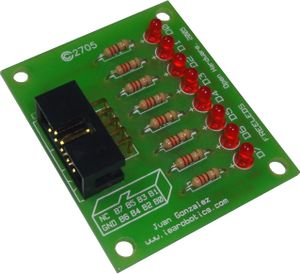
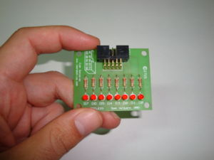
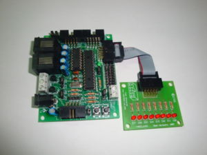
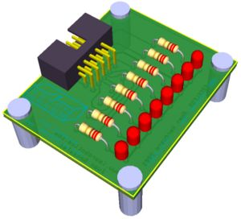
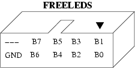

Contenido
[ocultar]Introducción
Tarjeta de prueba con 8 leds y conector para cable de tipo bus. Se conecta directamente a los puertos de la tarjeta Skypic. Se ha desarrollado para validar la herramienta de desarrollo electrónico Kicad, que es libre, y comprobar si con ella se pueden diseñar placas de calidad industrial.
La principal aplicación es su conexión a la tarjeta Skypic para visualizar información a través de los leds y depurar las aplicaciones. Es muy útil cuando se está aprendiendo a programar el microcontrolador PIC, o en los talleres de robótica que impartimos.
La Freeleds es una de las primeras placas que es hardware libre2: es libre y se ha diseñado con herramientas libres.
| 
La tarjeta freeleds 1.0 |

La freeleds conectada al puerto B de la Skypic |


Motivación


Los motivos principales por lo que he diseñado esta placa son:
- Aprender a usar el kicad. Cuando descubrí de la existencia de la herramienta libre de diseño electrónico Kicad, empecé a probarla y me planteé construir la placa “hola mundo” más sencilla posible.
- Validar la fabricación industrial con Kicad. Quería validar el Kicad y comprobar si con esta herramienta libre podrían construirse placas industriales. La respuesta es que sí.
- Hacer una de las primeras placas hardware libre2. Es decir, crear mi primera placa de tipo LLL, según la nomenclatura descrita en el artículo: Hardware libre: clasificación y desarrollo de hardware reconfigurable en entornos GNU/Linux
Características
- 8 leds de 3mm
- Dimensiones: 5 x 4.1 cm
- Placa a simple cara
- Conexión a través de un cable plano de tipo bus de 10 hilos.
- Hardware Libre2
- Diseñada con Kicad
Ejemplo de programación
Conectar la freeles a la Skypic a través del puerto B. Este ejemplo muestra saca un valor por los leds de la freeleds. Está programado en C, con el compilador libre SDCC 2.8.0
#include <pic16f876a.h>
void main(void)
{
//-- Configurar todos los bits del puerto B como salida
TRISB=0x00;
//-- Sacar un valor de 8 bits por el puerto
PORTB = 0xAA;
//-- Bucle infinito
while(1);
}
Conexión
|
 |
La Freeleds dispone de un conector acodado de 10 pines. En la figura se muestra la asignación de los pines. B0 se corresponde con el led de meno peso (D0). |

Descarga
- Ficheros FUENTE y de fabricación:
| Freeleds-v1.0.zip | Ficheros fuentes para Kicad: Esquemas, librerias y PCB |
| freeleds-v1.0-fabricacion.zip | Ficheros GERBER para fabricación industrial |
- Ficheros con documentación en PDF:
| freeleds-sch.pdf | Esquema |
| freeleds-PCB-bottom.pdf | PCB. Cara superior |
| freeleds-serigrafia-Top.pdf | Listado de componentes |
- Ejemplos de programación
| freeleds-1.0-test.zip | Ejemplos de programación para Skypic. Compilador SDCC 2.8.0 |
Repositorio
- Repositorio SVN: http://svn.iearobotics.com/Freeleds
Para obtener la última versión teclear:
svn co http://svn.iearobotics.com/Freeleds/v1.0
Historia
- 17/Dic/2009: Creado el renderizado en 3D. Migración al wiki y al repositorio completada
- Julio-2005: Fabricación de la primera tirada, de 55 unidades. Hecha Electrocir
- Agosto-2001: Andrés Prieto-Moreno Torres crea la tarjeta libre PCTLED. La freeleds es un diseño derivado de ella
Autores
|
La Freeleds es una placa derivada de la pctled (v1.3) creada por Andrés Prieto-Moreno |
Licencia
| |
| Este proyecto tiene una licencia libre. Se permite expresamente su copia, modificación, distribuición y fabricación siempre que se reconozca a los autores y se comparta el proyecto bajo la misma licencia.
Descarga de Responsabilidad. Los autores no se hacen responsables en ningún caso de los posibles daños o pérdidas de garantía que pueda ocasionar el uso, debido o indebido de la información contenida en este proyecto. |
Enlaces
- Monolito. Biblioteca de componentes para Kicad
- Skypic. Tarjeta entrenadora para el PIC16F876A
- pctled Tarjeta PCTLED. Tarjeta "padre" de la freeleds
- Kicad. Herramienta libre de diseño electrónico.
Créditos
- Andrés Prieto-Moreno Torres es el autor de la placa pctled, de la que se ha derivado la freeleds.
Agradecimientos
- A Andrés Prieto-Moreno Torres por gestionar la fabricación de la freeleds a través de Ifara. ¡Muchas gracias!
- A Jean-Pierre Charras, creador del Kicad. Muchas gracias por esta estupenda herramienta.
Noticias
- 21/Dic/2009: Añadidos ejemplos de programación
- 17/Dic72009: Añadido renderizado 3D. Migración completada
- 16/Dic/2009: Comenzada la migración desde la página original de la freeleds.